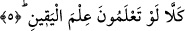

aralığı vardır.
Hz. Ali’nin şöyle dediği rivâyet olunuyor: “Biz, bu sûre, «Sonra yine hayır! Yakında
bileceksiniz» âyeti ininceye kadar kabir azabından şüphe ederdik.” [202] Yâni kabirde
bileceksiniz, ondan sonra bir de kıyamette bileceksiniz!
Bir hadis-i şerifte şöyle buyurulur: “Kâfire kabrinde, doksan dokuz ejdarha musallat
olur. Bunların herbiri kâfiri kıyamet kopuncaya kadar ısırır, sokar. Bu ejderhalardan
herhangi biri yeryüzüne üfürse toprakta hiçbir yeşillik bitmezdi.” [203]
5. Gerçek öyle değil! Kesin bilgi ile bilmiş olsaydınız,
Bu son âyette “Kellâ”, uyarıyı tekid etmek üzere tekrâr edilmiştir.
Âyetteki şart edâtı olan “lev”in cevâbı, hâlin korkunçluğunu ifâde etmek için
hazfedilmiştir. Zîrâ cevap hazfedilince, başa gelmesi mümkün olan bütün ihtimaller
insanın aklına gelir.
“İlme’l-yakîn” terkîbinde, “ilim” kelimesi masdardır ve mef’ûlüne muzâf olmuştur.
“Yakîn” kelimesi ise mahzûf bir mevsûfun sıfatıdır. Buna göre âyete mânâ vermek
gerekirse şöyle deriz: Şâyet siz önünüzde sizi bekleyen şeyi, kesin bir durumu bilir gibi
bilseydiniz, bir başka ifâde ile; kesin olarak bildiğiniz bir şey gibi bilseydiniz, hiç târif
edilemeyecek ve anlaşılamayacak şeyleri yapardınız. Fakat siz iyice sapıtmış
câhillersiniz.
Buradaki “yakîn”, kendisinden tam olarak emîn olunan demektir. Hattâ sanki o ilme’l-
yakîn; yâni gözle görmüş gibi bilmektir. Eğer böyle düşünmezsek, “ilme’l-yakîn”
tâbirinde iki eş anlamlı kelimenin birbirine izâfe edilmiş olması gibi bir durumla karşı
karşıya geliriz. Çünkü “ilim” kelimesi sözlükte “yakîn” anlamındadır. Burada “ilim”
âmmın hâss’a izâfesi kabul edilir. Zîrâ “yakîn”, “ilim”den daha husûsîdir. “İlim” hem
“zann”a hem de “yakîn”e şâmildir. Ona izâfeti, ülkenin Bağdâd’a izâfesi gibidir.
Arapların, “yakîn”i, ilme sıfat yaparak “el-ilmü’l-yakînî” demeleri de buna delâlet
etmektedir.
6. (Orada) mutlakâ Cehennem ateşini görürdünüz.
Bu âyet, gizli bir yemînin cevâbıdır. Bu yeminle, önceki âyetlerde geçen tehdîd tekid
edilmiştir. Çünkü onların tehdîd edildiği şey, şüpheye mahal olmayan bir hakîkattir. Bu
ifâdeyle tehdîd ağırlaştırılmıştır. Ayrıca, uyarıldıkları şey daha evvel müphem